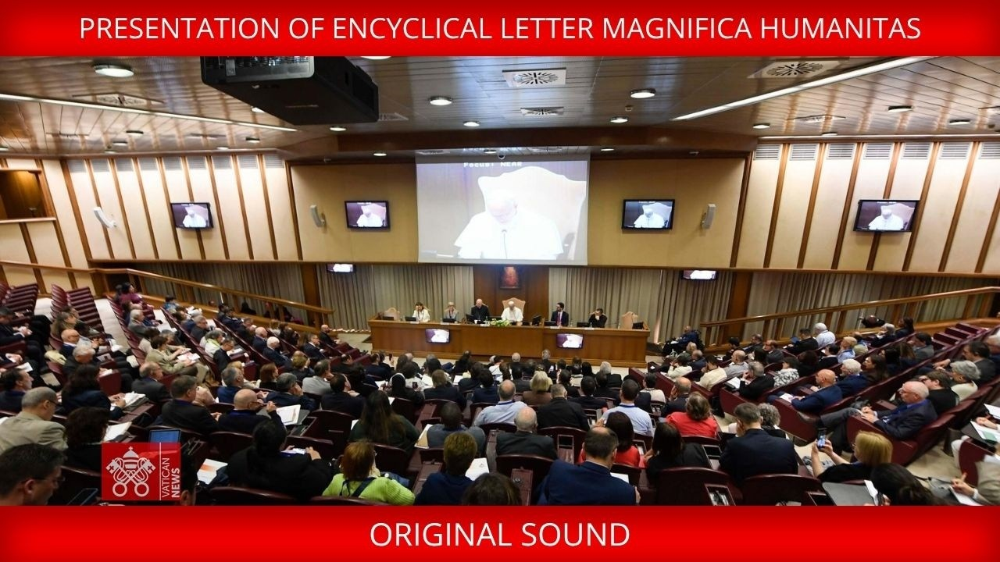

Magnifica Humanitas: Pope Leo XIV’s Encyclical on AI

Five days ago Pope Leo XIV gave Magnifica Humanitas (“the grandeur of humanity”), an encyclical letter “on safeguarding the human person in the time of artificial intelligence,” timed to the 135th anniversary of Leo XIII’s Rerum Novarum (“of new things”), the 1891 letter that founded modern Catholic social doctrine in response to the industrial labor crisis. The launch, shown in the video above, was a multi-speaker affair: cardinals, theologians, and ethicists, and, notably, Anthropic co-founder Chris Olah, whose remarks brought a frontier AI lab onto the platform.
The framing is explicit: AI governance is the Rerum Novarum problem of this pontificate. Chapter Three is the substantive AI material. The remaining chapters extend it to truth and democracy, work, and weapons.
At 245 paragraphs, the letter is long, so this post is built in layers, each more detailed than the last. The Summary is my own reading, the handful of ideas I think matter most. The Key Concepts and Positions index lays out every position the letter takes, each linking down into the Walkthrough, which follows the letter paragraph by paragraph, links every point out to the Vatican source, and adds the occasional editor’s note where a passage needs context the letter assumes.
Summary
Each section below takes up one idea I draw from the letter and why it matters for anyone building AI, with the supporting paragraphs cited inline.
Human dignity outranks efficiency, and the rest follows
The root claim is that a person’s worth is intrinsic, prior to ability, wealth, or output, and the letter singles out as “insidious” the ideology that one must “earn or justify his or her own worth,” granting “greater value to those who are more efficient or effective” (¶51). Every other position descends from this one: economic freedom “must always be measured against the common good and the dignity of every person” (¶157), a civilization is judged “not by the power of its means, but by the care it is able to offer” (¶112), and work, democracy, education, and the duties of researchers and developers all follow as corollaries. For an AI/ML reader, the practical consequence is that the letter refuses the trade the field treats as default: when dignity conflicts with efficiency or profit, dignity shall win, and the concrete asks (worker protection, contestable algorithms, no lethal autonomy) all follow from that one unified principle.
Technology is opinionated, and neutrality is a fiction
Every artifact “takes on the characteristics of those who devise, finance, regulate and use it” (¶9) and “embodies choices and priorities through what it measures, ignores and optimizes, and how it classifies people and situations” (¶104), so building is already a moral act, and some lines must not be crossed at all, from designing platforms “to capture users’ time and attention, exploiting their vulnerabilities” (¶170) to delegating a lethal decision to a machine (¶198). The letter draws the consequence the field least likes to hear: those who limit themselves “to looking only at their own sector … may deceive themselves into believing they are performing actions that are morally neutral” (¶209). The letter names the “I only built the component” defense as self-deception.
AI is not human
The letter is precise about what AI is and is not: it imitates human functions and outruns us in speed and computation, but “remains entirely tied to data processing,” and its systems “do not undergo experiences, do not possess a body, do not feel joy or pain,” “do not know from within what love, work, friendship or responsibility mean,” and have no moral conscience, “since they do not judge good and evil,” while what is called learning is “a form of statistical adaptation based on data and feedback” rather than inner growth (¶99). Because it is not a moral subject, it cannot bear responsibility, and the governance line follows directly: every consequential decision needs an identifiable human “who must ‘account’ for decisions, justify them, monitor them, and, when necessary, challenge them and remedy any harm caused” (¶105). The failure the letter names is “entrusting an algorithm … with the power to select who is worthy or not, without anyone bearing responsibility for that judgment” (¶103), and, in war, accountability that is “collapsed into ‘the machine’” (¶200). For an AI/ML reader this cuts both ways: it refuses the “the model did it” deflection, and it refuses to grant the model the moral or legal standing that would let it carry the blame.
The invisible hand is a mirage
Two of the letter’s principles together strip the market of its self-justification. The common good is “greater than the sum of its parts,” so “the mere sum of individual interests is not capable of generating a better world” (¶¶60–61), a direct denial of the invisible-hand claim, popularized as Gordon Gekko’s “greed is good,” that aggregated self-interest yields the common good. The universal destination of goods then subordinates private ownership to a prior claim that the goods of creation, now including data, algorithms, and platforms, are meant for all (¶¶65–67). The letter does not abolish markets or property, only insists that “economic freedom is not absolute” (¶157) and that “it is no longer possible to rely solely on the ‘invisible hand’” (¶163), which for an AI/ML reader removes the industry’s default defense that competition and profit sort out the right outcome on their own.
Technical power is not a mandate to govern
The encyclical’s term for this is “disarming” AI, defined precisely as “discrediting the assumption that technical power automatically confers the right to govern” (¶110). The worry is concrete, because control over “platforms, infrastructure, data and computing power” rests with private actors who “set the conditions for access, determine the rules of visibility and shape the very possibilities for participation” (¶95), functions that in a democracy belong to bodies elected by and accountable to the public. When unelected technical power sets the rules of participation it governs without a mandate, which the letter reads as “pure power detached from truth” (¶133) and ties to a “descent into totalitarianism” (¶134). For an AI/ML reader, this denies the field’s quiet assumption that controlling the frontier earns a place at the table where the public’s rules are set.
No war is just, and no machine may kill on its own
The letter closes the oldest escape hatch in military ethics: “the ‘just war’ theory, which has all too often been used to justify any kind of war, is now outdated” (¶192). It preserves only “the right to self-defense in the strictest sense,” which keeps defending against an actual invasion legitimate while rejecting the elastic justifications long used for wars of choice and preventive attacks. On AI it is categorical: “it is not permissible to entrust lethal or otherwise irreversible decisions to artificial systems” (¶198), and the decision to use lethal force must stay “under effective, self-aware and responsible human control” (¶200).
The obvious objection is the arms-race one: if we hold back, the other side will not, so we must move first. The letter refuses the premise rather than meeting it on its own terms. It calls that reasoning “false realism” and names Realpolitik, “an attitude of resignation to the inevitability of war,” the truly irresponsible position (¶205), and it makes the prohibition hold whatever an adversary does. Its concrete alternative is not unilateral restraint but a binding “shared framework … to curb the technological arms race” (¶200). The honest gap, which the letter half-concedes, is that it offers no mechanism for a rival who refuses to sign: the 2021 Treaty on the Prohibition of Nuclear Weapons “risks remaining largely symbolic” because the nuclear powers never joined (¶194).
The test is whether AI makes us more human
The letter offers one usable test for any technology, drawn from integral human development: does it help people “become more humane and fraternal, while respecting our common home and future generations” (¶82)? It is a better question than the field’s defaults of capability, efficiency, or engagement, because it asks what a system does to the person rather than what it scores on a benchmark. It also turns the test against transhumanism, the “ideological background present in some centers of technological power” (¶115) that urges humanity “to overcome limitations through technology” (¶232): the encyclical answers that “humanity flourishes not despite limitations, but often through them” (¶118), so the aim is a more humane person, not a transcended or enhanced one. By that test the letter’s scattered critiques share a single shape: AI fails when it replaces human work instead of “freeing up human time and capabilities” (¶156), weakens judgment through ease (¶100) or de-skills the worker (¶150), addicts by design “to capture users’ time and attention, exploiting their vulnerabilities” (¶170), erodes freedom by profiling and steering behavior (¶171) or rests on new forms of slavery (¶173), or kills on its own (¶198). It passes only when it augments the person and their freedom, rather than replacing, weakening, addicting, controlling, enslaving, or killing.
Key Concepts and Positions
The positions the letter stakes, each linking to where it is explained in the Walkthrough below. Paragraph numbers point into the chapter bullets.
Frame and method
- The Babel-or-Jerusalem choice: humanity faces “a pivotal choice: either to construct a new Tower of Babel or to build the city in which God and humanity dwell together.” (¶1, the two images, ¶129)
- “Babel syndrome”: idolatry of profit, uniformity that erases difference, and the pretense that a single digital language can reduce everything, including persons, to “data and performance.” (¶10)
- The technocratic paradigm: technology becomes “the standard by which everything is judged,” so we risk “having more without being more.” (¶92)
- Technology is never neutral: “it takes on the characteristics of those who devise, finance, regulate and use it.” (¶9, ¶104)
- AI as the res novae (“new things”): digitalization, AI, and robotics are this era’s “new things,” placing AI in the lineage of Rerum Novarum’s response to industrial upheaval. (¶4, ¶3, the lineage)
What AI is
- “More cultivated than built”: “all of us, including those who design them, possess only a limited understanding of their actual functioning.” (¶97)
- AI is not human intelligence: what is called “learning” is “a form of statistical adaptation based on data and feedback,” not inner growth. (¶99)
- Power asymmetry: control over “platforms, infrastructure, data and computing power does not rest with States, but with major economic and technological actors,” and AI amplifies the power of those who already hold it. (¶5, ¶95, ¶108)
- Three risks of personal use: ease that atrophies judgment, false objectivity, and simulated companionship, the real danger being the gradual loss of “the very desire to form genuine human connections.” (¶100)
- The environmental cost: AI requires “enormous amounts of energy and water,” with significant carbon emissions from its data centers. (¶101)
Governance positions
- The alignment critique: “a more moral AI is not enough if that morality is determined by a few.” (¶107)
- Data cannot be left solely in private hands: it is the product of many contributors and “must be appropriately regulated.” (¶108)
- Accountability requires an identifiable party: someone must “account for decisions, justify them, monitor them, and, when necessary, challenge them and remedy any harm caused.” (¶103, ¶105)
- “Disarm AI”: disarming means “discrediting the assumption that technical power automatically confers the right to govern.” (¶110)
- Slowing down is not opposing progress: it requires “robust legal frameworks, independent oversight, informed users and a political system that does not abdicate its responsibility.” (¶106)
- Developers must embed values by design: “every design choice reflects a vision of humanity.” (¶111)
The human person
- Against transhumanism and posthumanism: even where speculative, these visions shape policy, and some envision “‘second-class’ human beings, subordinate to the interests of elites.” (¶115, ¶172)
- Human flourishing through limits: humanity “flourishes not despite limitations, but often through them.” (¶118, ¶127)
Truth and democracy
- Truth as a common good: disinformation pre-existed AI, but AI is its amplifier, and truth still needs “verification, cross-checking of sources and responsible argumentation.” (¶132)
- Influence concentrated: a few can shape what people believe about “the meaning of existence, the family and even God,” which is “pure power detached from truth.” (¶133)
- Truth and democracy: “indifference to the truth leads, slowly but surely, to a descent into totalitarianism.” (¶134)
- An ecology of communication: transparent content selection, data protection, stronger journalism, and education to grasp complexity. (¶137)
Education
Work and economy
- Work, and AI that de-skills and surveils: AI “frequently forces workers to adapt to the speed and demands of machines” and can “de-skill workers, subject them to automated surveillance.” (¶148, ¶150)
- Unemployment and unequal effects: “outsized remuneration for a highly specialized minority alongside declining wages for a large portion of the workforce.” (¶151)
- Beyond GDP, and beyond the “invisible hand”: “it is no longer possible to rely solely on the ‘invisible hand’ of the market,” so “politics has the task of orientating economies and technologies to the common good.” (¶159, ¶163)
- Concrete levers for the labor transition: social criteria on every automation rollout (protecting employment, retraining, and worker participation), training made accessible to all so adaptation costs do not fall on individuals alone, and dignity of work as a corporate success metric. (¶156)
- Criteria for an economy that favors dignity: algorithmic decisions “understandable, contestable and subject to oversight”; inclusion through investment in skills and infrastructure; and equity, where “taxation, social protection and industrial policies must correct the imbalances created by the concentration of wealth and power.” (¶164)
Freedom
- The attention economy and social control: platforms are “designed to capture users’ time and attention, exploiting their vulnerabilities,” and “the architecture of visibility” shapes what people think. (¶170, ¶171)
- New forms of slavery: “nothing in the world of AI is immaterial or magical,” from data labeling and moderation to rare-earth mining under harsh conditions. (¶173)
- An apology for the Church’s complicity in slavery: “in the name of the Church, I sincerely ask for pardon.” (¶176; editor’s note on what exactly was apologized for)
- New colonialism: health, epidemiological, and genetic data become “the new ‘rare earths’ of power.” (¶178)
War, weapons, and peace
- “Just war” theory is outdated: it “has all too often been used to justify any kind of war” and “is now outdated.” (¶192)
- No lethal decision may be delegated to AI: “it is not permissible to entrust lethal or otherwise irreversible decisions to artificial systems.” (¶197, ¶198, ¶200)
- The crisis of multilateralism: post-1989 globalization “lacked an adequate political framework,” yielding “disorderly and conflict-ridden multipolarism.” (¶201)
- Realpolitik is the real irresponsibility: “what is truly irresponsible is Realpolitik, the form of political ‘realism’ that sows… resignation to the inevitability of war.” (¶205)
- Researchers and developers cannot claim neutrality: those who look “only at their own sector… may deceive themselves into believing they are performing actions that are morally neutral.” (¶209)
- Five paths to the “civilization of love” (Paul VI’s phrase for a society ordered by love and justice rather than power): disarm words, build peace through justice, adopt the victims’ perspective, cultivate realism, and revive dialogue. (¶213; editor’s note on the Gandalf quote)
Theology
- The Incarnation as the counter to transhumanism: against ideologies that “urge humanity to overcome limitations through technology,” the Son of God enters our human condition. (¶232)
- No computational system can create a conscience: “no computational system, however sophisticated, can create a heart that gives itself, or a conscience that discerns good from evil.” (¶233)
- Four imperatives for “the construction site of our time”: be faithful to truth, invest in education, cultivate relationships, and love justice and peace. (¶237)
- Become “weavers of hope”: Mary looks at the world “through the eyes of those who suffer rather than the mighty,” and the faithful are called to become “weavers of hope.” (¶243)
Walkthrough
The encyclical runs 245 numbered paragraphs across an introduction, five chapters, and a conclusion. Paragraph numbers are given in parentheses for traceability. It opens by posing a single choice, Babel or Jerusalem, then builds the argument across five chapters:
- Introduction (¶¶1–16): names AI, digitalization, and robotics as the res novae (“new things”) of this era, and sets up the two biblical images that thread the document.
- Chapter 1, A Dynamic Approach Faithful to the Gospel (¶¶17–45): how Catholic social doctrine was built across a century of encyclicals, and why AI is treated as its next subject rather than a side topic.
- Chapter 2, Foundations and Principles (¶¶46–89): the principles (human dignity, the common good, the universal destination of goods, subsidiarity, solidarity, social justice) that Chapter 3 applies to AI.
- Chapter 3, Technology and Dominance (¶¶90–130): the AI core, the technocratic paradigm, the limits of what AI is, the critique of “alignment,” and the call to “disarm” AI.
- Chapter 4, Truth, Work, Freedom (¶¶131–181): AI and disinformation, education in the digital age, the future of work, and the attention-and-data economy.
- Chapter 5, The Culture of Power and the Civilization of Love (¶¶182–228): war and weapons (including autonomous weapons and AI), the crisis of multilateralism, and five concrete paths toward peace.
- Conclusion (¶¶229–245): a four-part program for Christian life and a closing call to become “weavers of hope.”
Editor’s note. Two biblical images thread the whole document. The Tower of Babel (Genesis 11:1-9) is humans with one language building “a tower with its top in the heavens” to “make a name for ourselves.” It collapses; languages scatter; communication breaks down. The encyclical reads it as concentrated technical ambition detached from any moral framework, and applies it to the current frontier-lab arms race.
Nehemiah’s Jerusalem (Nehemiah 2–6) is the counter-image: a ruined city rebuilt piece by piece, families assigned sections of wall, listening and coordination over imposed plans. Paired with the New Jerusalem of Revelation 21, which “descends as a gift” with gates “permanently open to all nations,” it stands for distributed, accountable construction.
The choice the document poses is not adopting or rejecting AI but Babel or Jerusalem as the social form the technology takes.
Introduction (¶¶1–16)
- The framing choice (¶1). Humanity faces “a pivotal choice: either to construct a new Tower of Babel or to build the city in which God and humanity dwell together.” The two biblical images thread the entire document.
- Continuity with Leo XIII (¶3). Issued on the 135th anniversary of Rerum Novarum and positioned as the next chapter of Catholic Social Doctrine.
- The “new things” of this era (¶4). Digitalization, AI, and robotics are the res novae (Latin: “new things”). Technology is “a profoundly human reality,” and yet “never has humanity had such power over itself.”
- Power has shifted from states to private actors (¶5). Quotes Francis: nuclear, biotech, IT, DNA knowledge have given those with capital “an impressive dominance over the whole of humanity.” Today, the drivers of innovation are private and transnational, with capacities exceeding most governments.
- The Babel image (¶7). Single language, single technology, single direction yields uniformity that eliminates diversity. Communication breaks down, dispersion follows. The city is “built on pride and the claim to self-sufficiency.”
- The Nehemiah image (¶8). Rebuilds Jerusalem piece by piece, families assigned sections, listening and coordination and shared responsibility. Rebuilds relationships before stones.
- Technology is never neutral in practice (¶9). “It takes on the characteristics of those who devise, finance, regulate and use it.” The choice is not yes/no to technology, it is Babel or Jerusalem.
- “Babel syndrome” defined (¶10). Idolatry of profit, uniformity that erases difference, and the pretense that a single digital language can translate everything (including persons) into “data and performance.”
- Building for the common good (¶¶11–14) requires a firm relationship with God, accepting human limits and weakness rather than treating them as errors to correct, shared responsibility (subsidiarity), and an evangelical language that avoids both naïve enthusiasm and unfounded fear.
- “Remaining human” is the duty of this era (¶15). “Human dignity is threatened by new forms of dehumanization.”
Chapter 1: A Dynamic Approach Faithful to the Gospel (¶¶17–45)
A self-aware lineage statement: how Catholic Social Doctrine got built, and why AI is being treated as the next res novae.
- AI is not just another topic (¶17). It “challenges the categories of Social Doctrine from within.”
- Distinction maintained (¶21). Church and political community are distinct; the Church does not claim state functions.
- The Church does not claim a monopoly on truth (¶25). “Truth is not a territory to be defended, but a good to be shared.”
- Walking through the lineage (¶¶29–44):
- Leo XIII / Rerum Novarum (1891). Primacy of human labor over capital and profit.
- Pius XI / Quadragesimo Anno (“in the fortieth year”; 1931). Denounced concentration of economic power; formulated subsidiarity.
- Pius XII. Postwar order rooted in natural law (the idea that basic moral norms are knowable through human reason, independent of religious revelation) and intermediary organizations.
- John XXIII / Pacem in Terris (“peace on earth”). Universalized human-rights framing.
- Vatican II / Gaudium et Spes (“joy and hope”). Economic and institutional structures judged by integral development of the person.
- Paul VI / Populorum Progressio (“the development of peoples”). “Development is the new name for peace.”
- John Paul II. Work as the key to the entire social question; “structures of sin” (social and economic systems that entrench injustice beyond any individual’s choices); Centesimus Annus (“the hundredth year”) on democracy and the market.
- Benedict XVI / Caritas in Veritate (“charity in truth”). Globalized economy weakening states; charity united with truth.
- Francis / Laudato Si’ (“praise be,” Italian) + Fratelli Tutti (“all brothers and sisters,” Italian). Environmental crisis as the ecological aspect of the social crisis; “cry of the earth and cry of the poor”; the technocratic paradigm critique that Magnifica Humanitas builds on.
- Social Doctrine is not a handbook (¶27). It is shared discernment between eternal truth and historical questions.
Chapter 2: Foundations and Principles of Social Doctrine (¶¶46–89)
The principles that get applied to AI in Chapter 3.
- Human person as image of the Triune God (¶¶48–50). Dignity is a gift that precedes abilities, wealth, and choices, grounded in the person being made in the image of the Triune God (the Christian Trinity: Father, Son, and Holy Spirit).
- Equal dignity (¶51). A particularly insidious ideology singled out: “every person must earn or justify his or her own worth, to the point of attributing greater value to those who are more efficient or effective.”
- Four levels of dignity (¶52): moral, social, existential, and ontological. The last belongs to every human simply by existing.
- “Infinite dignity” (¶53). Citing Dignitas Infinita (“infinite dignity”): “every human person possesses an infinite dignity, inalienably grounded in his or her very being.”
- Human rights at risk (¶56). Two specific dangers: rights declared formally while violations continue, and loss of universality foundations. “Rights considered untouchable today might, in the future, end up being questioned or denied by those in power.”
- Women’s rights singled out (¶57). “Doubly poor are those women who endure situations of exclusion, mistreatment and violence, since they are frequently less able to defend their rights.”
- Common good (¶¶60–64). “The whole is greater than the sum of its parts,” not aggregation of individual benefits. The state must “harmonize the different sectoral interests with the requirements of justice.”
- Universal destination of goods (¶¶65–67). The principle that the goods of creation are meant for all people, with private ownership subordinate to that purpose. It now extends explicitly to “new forms of property, such as patents, algorithms, digital platforms, technological infrastructure and data.” Concentration “contradicts the universal destination of goods.”
- Subsidiarity (¶¶68–72). The principle that decisions belong at the most local level able to handle them, with higher levels stepping in only when needed. Crucial application: in the digital revolution, “the highest level is not the State, but rather major economic and technological actors.” Subsidiarity applied to data, algorithms, and platforms requires “independent checks, transparency regarding algorithms, equitable access to data and avenues for recourse.”
- Solidarity (¶¶73–76). The commitment to the good of all, treating others’ welfare as a shared responsibility. It includes “the digital ecosystem,” which can be preserved or exploited, shared or monopolized. Solidarity demands that decisions about “data, algorithms, platforms and artificial intelligence” account for all peoples and future generations.
- (¶¶77–81). Begins with the least: a preferential option for the poor (the principle that the needs of the poorest come first), against the “throw away culture” (Francis) and structures of sin. Justice in the digital age requires equal access, protection of the weak, and subjecting data and technology to public oversight.
- Litmus test, migrants (¶81). How a society treats refugees shows “whether its sense of justice is driven by fear or by the spirit of fraternity.”
- Integral human development (¶¶82–85). The crucial question for technology: “Do they truly help individuals and peoples to become more humane and fraternal, while respecting our common home [the Earth] and future generations?”
- Examen (examination of conscience) for the Church itself (¶¶86–89). These principles apply inside the Church too, including listening to victims of “spiritual, economic, institutional, sexual and power-based abuse.”
Chapter 3: Technology and Dominance, the AI core (¶¶90–130)
Technocratic paradigm (¶¶92–94). Inherited from Laudato Si’: technology becomes “the standard by which everything is judged.” Romano Guardini quoted: “Contemporary man has not been trained to use power well.” The risk is “having more without being more.”
Power asymmetry (¶95). “Control over platforms, infrastructure, data and computing power does not rest with States, but with major economic and technological actors. These entities effectively set the conditions for access, determine the rules of visibility and shape the very possibilities for participation.”
Modesty about AI claims (¶¶97–98). Acknowledges that statements about AI go stale fast, and that “all of us, including those who design them, possess only a limited understanding of their actual functioning.” AI systems are “more ‘cultivated’ than ‘built’”, and fundamental scientific aspects “remain, at present, unknown.”
AI is not human intelligence (¶99). Imitates functions, surpasses humans in speed and computational capacity, but “remains entirely tied to data processing.” AI systems “do not undergo experiences, do not possess a body, do not feel joy or pain,” and have no moral conscience. What is called “learning” is “a form of statistical adaptation based on data and feedback, which can be very effective, but does not imply inner growth.”
Three personal-use risks (¶100): ease of results (atrophies judgment), impression of objectivity (hides designer bias), simulation of human communication. The real danger is not believing AI is a person, it is gradually losing “the very desire to form genuine human connections.”
Environmental cost (¶101). AI requires “enormous amounts of energy and water” with significant carbon emissions. Large language models drive demand for “an extensive network of machines, cables, data centers and energy-intensive infrastructure.” Calls for sustainable solutions.
AI in life-affecting decisions (¶102). Employment, credit, public services, reputation. AI does not know “compassion, mercy, forgiveness, and above all, the hope that people are able to change.”
Algorithm with no responsible party (¶103). “Entrusting an algorithm in practice with the power to select who is worthy or not, without anyone bearing responsibility for that judgment, is to hand over the task of redefining the boundaries of human possibilities.”
AI is not morally neutral (¶104). Every tool “embodies choices and priorities through what it measures, ignores and optimizes, and how it classifies people and situations.”
Accountability requires identifiability (¶105). Need to identify “who must ‘account’ for decisions, justify them, monitor them, and, when necessary, challenge them and remedy any harm caused.”
Slowing down is not opposing progress (¶106). Need “robust legal frameworks, independent oversight, informed users and a political system that does not abdicate its responsibility.”
The alignment critique (¶107). The most pointed passage in the document:
We cannot be satisfied with merely calling for the moralization of machines — the so-called “alignment” of AI with human values — without also having the courage to insist on a further condition: the possibility of openly discussing the ethical frameworks involved and subjecting them to shared standards of social justice… A more moral AI is not enough if that morality is determined by a few.
AI amplifies existing power (¶108). “AI tends to amplify the power of those who already possess economic resources, expertise and access to data.” Data is the product of many contributors, and “ownership of data cannot be left solely in private hands but must be appropriately regulated.”
Catholic Social Doctrine reframed for AI (¶109):
- Common good → “naming the new monopolies of AI.”
- Universal destination of goods → universal access to technology and the education to use it.
- Subsidiarity → communities making real choices, not stamping standards set elsewhere.
- Solidarity → recognizing “the hidden, often exploited workers, who sustain algorithmic systems.”
- Justice → questioning who can train models versus who is merely subjected to them.
- Social justice as a design condition, applied during design rather than after deployment.
“Disarm AI” (¶110). Frees AI from an “armed competition” mindset, which today is “a race for ever more powerful algorithms and larger datasets, driven by the desire to secure geopolitical or commercial dominance.” Definition: disarming means “discrediting the assumption that technical power automatically confers the right to govern.” It is not anti-technology, it is anti-domination.
Direct address to developers (¶111). “Every design choice reflects a vision of humanity… developers are called to embed values in their projects with due seriousness.”
What must not be lost (¶¶112–114). The risk is normalization of “an anti-human vision” where life is equated with “having more, reducing weakness, eliminating uncertainty and exerting total control.” Civilization is measured “not by the power of its means, but by the care it is able to offer.”
Transhumanism and posthumanism (¶¶115–117). Identified as the “ideological background present in some centers of technological power.” Transhumanism enhances humans via technology; posthumanism challenges anthropocentrism, hybridizes humans with machines, and anticipates “a new evolutionary stage.” Even where speculative, these visions shape collective imagination and policy. Distinction drawn: integrating technology into a human-centered vision is one thing, “an outlook that devalues human limits and promises a purely technical form of ‘salvation’” is another.
Limits matter (¶¶118–122). Humanity “flourishes not despite limitations, but often through them.” Compassion, generosity, religious experience emerge precisely in limits. Eliminating suffering “would mean, in the end, extinguishing love and desire as well.” Quotes Viktor Frankl on Auschwitz.
Moral progress is possible but slow (¶¶123–125). Names the International Committee of the Red Cross (1863), abolition of slavery, the UN (1945), the Universal Declaration of Human Rights (1948), the 1951 Refugee Convention, the US civil rights movement, the end of apartheid, and the “martyrs of everyday life” (parents, nurses, doctors, volunteers).
The authentic “more than human” (¶¶127–128). Christianity’s claim is that humans are called to self-transcendence through grace rather than through technical enhancement. “What saves humanity is not enhanced self-sufficiency, but a relationship that liberates.”
Two cities, two loves (¶¶129–130). Augustine framing: love of God and neighbor versus love of self. “The age of AI is no exception: the construction of Babel or the rebuilding of Jerusalem begins within each one of us.”
Chapter 4: Truth, Work, Freedom (¶¶131–181)
Truth as a common good (¶¶132–138)
- Disinformation pre-existed AI, AI is the amplifier (¶132). Manipulation of content, images, video. Truth requires “verification, cross-checking of sources and responsible argumentation.”
- Influence concentrated in few hands (¶133). Those with technology, capital, and human-capital resources “can influence a significant number of people concerning the truth about humanity, the world, the meaning of existence, the family and even God.” This is “pure power detached from truth.”
- Truth and democracy (¶134). “Indifference to the truth leads, slowly but surely, to a descent into totalitarianism.” Quotes Hannah Arendt on the ideal subjects of totalitarian regimes: those for whom “the distinction between fact and fiction… and between true and false… no longer exist.”
- Ecology of communication (¶137). Public-policy norms for transparent content selection and data protection; strengthened serious journalism and intermediary organizations; new educational awareness; integrated knowledge in universities to grasp complexity.
- Self-criticism for the Church (¶138). Acknowledges “painful truths concerning even members of the Church”; thanks journalists who exposed injustices and abuses; “we must not wait for others to compel us to confront uncomfortable truths about ourselves.”
Education in the digital age (¶¶139–147)
- Education systems are unprepared (¶139). Digital culture creates “immediacy and hyper-stimulation,” fatigue, apathy toward truth-seeking effort.
- Educating about AI = educating when NOT to use it (¶140). “The speed and ease with which answers or summaries can be obtained risk extinguishing the desire to ask questions.” Plato cited on slow learning through dialogue.
- Effects on minors (¶141). Documents “growing insistence” in psychological and psychiatric literature on negative effects of early or unsupervised exposure: sleep, attention, emotional regulation, relationships. Names grooming, blackmail, sexual exploitation, fake profiles, AI-manipulated images, and cyberbullying.
- Need an alliance among policymakers, education, families (¶142). Calls for age limits, service-provider accountability rather than dumping the burden on parents, and specific protections against online sexual exploitation.
- Three challenges for schools (¶¶143–146): socio-political (access inequality), pedagogical (curricula obsolete; teacher formation), intellectual (knowledge fragmentation). Schools “are not called to follow the pace of the digital world, but to offer that which the digital sphere by itself cannot provide.”
Work in digital transition (¶¶148–169)
- Work is not just an instrument (¶¶148–149). It “expresses and enhances the dignity of our lives.”
- Direct critique of current AI deployment (¶150). Quotes Antiqua et Nova (“ancient and new”): “AI promises to boost productivity by taking over mundane tasks” but “frequently forces workers to adapt to the speed and demands of machines.” Can “de-skill workers, subject them to automated surveillance and relegate them to rigid and repetitive tasks.”
- Unemployment risk (¶¶151–155). “Outsized remuneration for a highly specialized minority alongside declining wages for a large portion of the workforce.” Unequal global effects: wealthy societies automate chaotically, while “vast regions of the world… remain trapped in hybrid economies, where underpaid human labor and partial technologies coexist.” Labor unions called to be open to new types of employment.
- Three levers proposed (¶156): social criteria for innovation (verifiable employment, retraining, and participation safeguards); proactive continuous-training policies (cost not borne solely by individuals); corporate commitment to dignity-of-work indicators.
- Critique of “invisible hand” (¶163). “More than ever, in the age of AI and robotics, it is no longer possible to rely solely on the ‘invisible hand’ of the market.”
- Move beyond GDP (¶159). Develop “parameters and metrics complementary to GDP” that capture dignity of work, shared prosperity, inequality, and environment.
- Concrete economic criteria (¶164): transparency and accountability (decisions “understandable, contestable and subject to oversight”); inclusion and access; equity (taxation, social protection, and industrial policy correcting concentration).
- Family as social good (¶¶165–169). Job insecurity is especially devastating for young people. “Political creativity that will promote ‘work’ and place the family and coming generations at the center.”
Freedom: dependencies and commercialization (¶¶170–181)
Digital attention economy (¶170). “Platforms and services are often designed to capture users’ time and attention, exploiting their vulnerabilities.” Designers “bear a moral responsibility that cannot be ignored.” Calls for “digital sobriety” education.
(¶171). “Power to profile, predict and influence behavior” without awareness. “The architecture of visibility” (what is amplified or rendered invisible) shapes opinions. Calls for transparency, recourse, and proportionate limits.
“Second-class” humans warning (¶172). Some posthumanist currents “envision ‘second-class’ human beings, subordinate to the interests of elites who consider themselves superior.”
New forms of slavery (¶173). One of the most striking paragraphs in the document. “Nothing in the world of AI is immaterial or magical.” Names data labeling, model training, content moderation, “often involving disturbing material… young people, predominantly women, working under demanding conditions for minimal wages.” Names rare-earth extraction with “children and adolescents work in dangerous conditions.” Names trafficking via online platforms, AI profiling, and anonymous payments.
Apology for past Church complicity (¶176). The Church came to denounce slavery only slowly: in antiquity and the Middle Ages “even ecclesiastical institutions had slaves,” and in the early modern period “the Apostolic See of Rome, responding to requests from Sovereigns, intervened several times in order to regulate and legitimize forms of subjugation, and, in certain cases, the enslavement of ‘infidels’.” A “formal, absolute and universal condemnation of slavery” came only in the nineteenth century, “notably under Pope Leo XIII.” “For this, in the name of the Church, I sincerely ask for pardon.”
NoteEditor’s note. The pardon is not for a single decree but for the Church’s centuries-long delay in condemning slavery, for ecclesiastical institutions once holding slaves, and for the Apostolic See’s past role in regulating and legitimizing subjugation, including the enslavement of non-Christians (“infidels”), through what were historically papal bulls. Leo XIV adds the caveat that past events “cannot be judged anachronistically,” then asks pardon anyway for what he calls “a wound in Christian memory.” He turns it forward, into a duty to denounce human trafficking, “a contemporary form of slavery,” today (¶¶175, 177).
New colonialism (¶178). “Colonialism assumes new forms… appropriates data, transforming personal lives into exploitable information.” Health data, epidemiological profiles, and genetic maps become “the new ‘rare earths’ of power.” “Otherwise, the digital age will not be post-colonial, but colonial in another form.”
Three action fronts (¶179): transparent supply chains; preventive ethical due diligence by companies and investors; digital platforms cooperating to prevent recruitment and control of trafficking victims.
Chapter 5: The Culture of Power and the Civilization of Love (¶¶182–228)
The culture of power and the normalization of war (¶¶185–192)
- Modern Babel (¶185). “Remote clash between opposing imperialisms, between powers that wish to preserve their supremacy, and those that aspire to seize that supremacy.”
- Paradigm shift in war discourse (¶¶190–191). “Troubling revival of war as an instrument of international politics.” “Disconcerting loss of historical memory” as first-hand Holocaust and World War accounts disappear.
- Algorithm-amplified polarization (¶192). Algorithms that “reward conflict” magnify polarization. War “culturally conditioned through simplistic narratives, a friend-or-foe mentality, disinformation and fear.”
- “Just war” theory declared outdated (¶192). “It is important to reaffirm that the ‘just war’ theory, which has all too often been used to justify any kind of war, is now outdated.” The right to self-defense is narrowly preserved. “Humanity possesses far more effective and capable tools for promoting human life and resolving conflicts, such as dialogue, diplomacy and forgiveness.”
Weapons (¶¶193–196)
- Military-industrial complex as “armed nation” (¶193). “War appears as a natural extension of politics, and the arms market becomes an autonomous driving force behind military decisions.”
- Nuclear arms race re-igniting (¶194). “Tactical” use, miniaturized weapons, dismantling of reduction agreements. The 2021 Treaty on the Prohibition of Nuclear Weapons “risks remaining largely symbolic” since nuclear powers have not joined.
- End of state monopoly on force (¶196). “Jihadist groups, private militias and criminal networks.” The goal is sometimes “no longer a definitive victory, but the perpetuation of conflict as a source of power and income.”
Weapons and AI (¶¶197–200)
- Autonomous weapons make war “feasible” (¶197). “Growing ease with which autonomous weapons systems can be deployed makes war more ‘feasible’ and less subject to human control.” “Development and use of AI in warfare must be subject to the most rigorous ethical constraints.”
- No “artificial moral agents” (¶198). “It is not permissible to entrust lethal or otherwise irreversible decisions to artificial systems.” AI does not remove the inhumanity of conflict, it only makes it faster, more impersonal, lower-threshold. “Reducing victims to data… accustom us to the idea that violence is inevitable and needs only to be optimized.”
- Three concrete criteria (¶199): identifiable and verifiable chain of personal responsibility; moral timeframe (speed cannot be the supreme motivator for irreversible decisions); identification and protection of civilians.
- Three non-negotiables (¶200): retraceable decision-making in war systems; lethal-force decisions cannot be delegated to opaque or automated processes, must remain “under effective, self-aware and responsible human control”; international shared framework to curb the technological arms race.
Multilateralism crisis and false realism (¶¶201–209)
- Multilateralism crisis (¶201). Post-1989 globalization “lacked an adequate political framework”; “almost blind faith was placed in the ability of the markets.” Result: “disorderly and conflict-ridden multipolarism.”
- “Might makes right” returning (¶202). International courts weakened or bypassed.
- Realpolitik critique (¶205). “What is truly irresponsible is Realpolitik, the form of political ‘realism’ that sows in consciences and in society an attitude of resignation to the inevitability of war.”
- Researcher and developer responsibility (¶209). Scientists, business owners, investors, academics, politicians: “When people limit themselves to looking only at their own sector, they may deceive themselves into believing they are performing actions that are morally neutral.” Risk of “cooperating, perhaps unknowingly, with questionable projects.”
Building the civilization of love, five paths (¶¶213–227)
The encyclical pairs its call for a “civilization of love” (Paul VI’s phrase for a society ordered by love and justice rather than power) with its one literary quotation, a line from J.R.R. Tolkien that it attributes to “a protagonist in one of his novels” (¶213): “It is not our part to master all the tides of the world, but to do what is in us for the succour of those years wherein we are set, uprooting the evil in the fields that we know, so that those who live after may have clean earth to till.”
Editor’s note. This is the only fictional character quoted in the 40,000-word letter, and Ars Technica read the choice as a quiet message to the Tolkien-obsessed accelerationist right, above all Peter Thiel, whose firms are named Palantir, Mithril, and Valar and whose lecture tour casts regulation as “peace and safetyism,” the slogan of the Antichrist. The encyclical names no target, so the more defensible reading is that Leo reinterprets a text both camps revere against its accelerationist reading, rather than trolling one man.
It then lists five paths:
- Disarm words (¶214). Examine our own language, prejudices, aggression. “Let us disarm words and we will help to disarm the world.”
- Build peace through justice (¶215). Augustine: “justice and peace have embraced.”
- Adopt the perspective of victims (¶¶216–217). “Touch the wounded flesh.” Reject neutrality in some conflicts. The Church as “a place of living memory for victims.”
- Cultivate healthy realism (¶218). Avoids both selective-fact idealism and observation-as-resignation. Seeks “viable paths… through credible institutions, verifiable guarantees, patient negotiations, conflict prevention and the protection of civilians.”
- Revive dialogue and multilateralism (¶¶219–224). Shift from “culture of power” to “culture of negotiation.” “War is never inevitable. Weapons can and must be silenced.” Interreligious dialogue: “to fight in the name of religion means attacking religion itself.”
- Cyberspace as battleground (¶225). Cyberattacks, data manipulation, AI-orchestrated influence “destabilize entire countries even before open armed conflict.” Attribution is often unclear, increasing the risk of disproportionate reaction.
- UN reform (¶226). The Holy See (the Catholic Church’s central governing authority, the pope together with the Roman Curia) backs the UN but acknowledges that “the current weaknesses of the UN and the international political system reveal the need for profound reforms.”
- Closing prayer plea (¶228). “Peace that is unarmed and disarming, humble and persevering.”
Conclusion (¶¶229–245)
A four-pillar Christian-life program: contemplating God’s plan; ecclesial unity through the Eucharist; building the common good; prayer with Mary.
- The Incarnation as counter to transhumanism (¶232). “Old and new ideologies alike urge humanity to overcome limitations through technology, and to rise above others by asserting dominance. Contrary to this, the mystery of the Son of God entering into our human condition promises something quite different.”
- Direct rebuttal of computational replacement (¶233). “No computational system, however sophisticated, can create a heart that gives itself, or a conscience that discerns good from evil.”
- Four imperatives for “the construction site of our time” (¶¶237–240):
- Faithful to truth. Algorithms increasingly sophisticated at influencing decisions; cultivate hearts that love truth over “immediate results.”
- Invest in education. The digital world is “a new continent to be evangelized.”
- Cultivate relationships. Physical presence (shared meals, gatherings, time with the lonely, serving the poor) as resistance to fragmentation.
- Love justice and peace. Examine supply chains of digital production, working conditions, mechanisms that profit from manipulation and war.
- Nehemiah parable (¶241). “Not to be passive spectators of social and cultural fractures, nor mere commentators on what is crumbling, but men and women prepared to enter the construction sites of history: research laboratories, technology companies, schools, the media, institutions and local communities.”
- The Magnificat as closing image (¶¶243–245). Mary’s hymn (Latin: “my soul magnifies the Lord”). It teaches us “to look at the world from a lower position: through the eyes of those who suffer rather than the mighty.” The faithful are called to become “weavers of hope.”
- Signed: “Given in Rome, at Saint Peter’s, on 15 May, in the year 2026, the second of my Pontificate. LEO PP. XIV.”
The encyclical is densely citational. The most-cited sources, in rough order: Vatican II’s Gaudium et Spes, Francis’s Fratelli Tutti and Laudato Si’, John Paul II’s Centesimus Annus / Sollicitudo Rei Socialis (“on social concern”) / Laborem Exercens (“through work”), Benedict XVI’s Caritas in Veritate, the 2025 Vatican note Antiqua et Nova (the immediate predecessor on AI, from two offices of the Roman Curia, the Vatican’s central administration: the Dicastery for the Doctrine of the Faith and the Dicastery for Culture and Education, whose positions Magnifica Humanitas extends and elevates to encyclical-level teaching), and the 2024 Dignitas Infinita declaration on human dignity.
Social doctrine, applied to AI